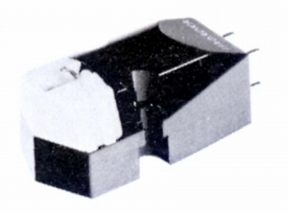
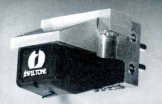
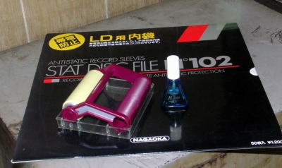
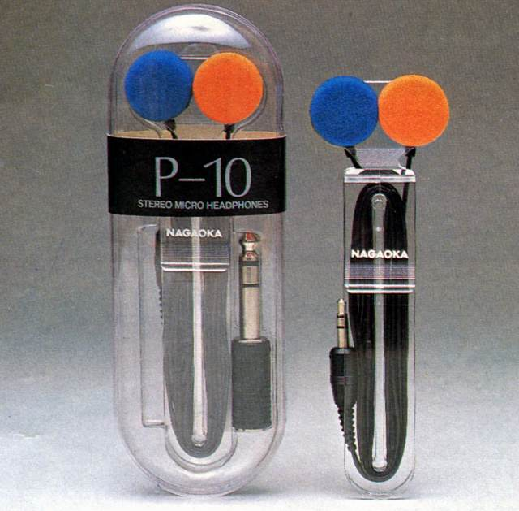
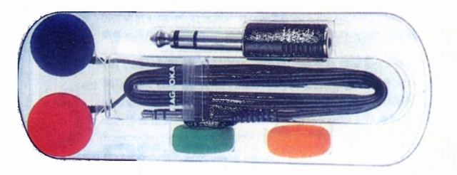
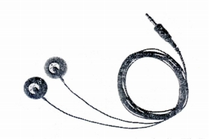
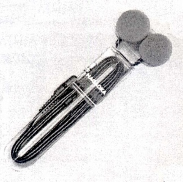
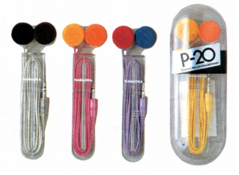
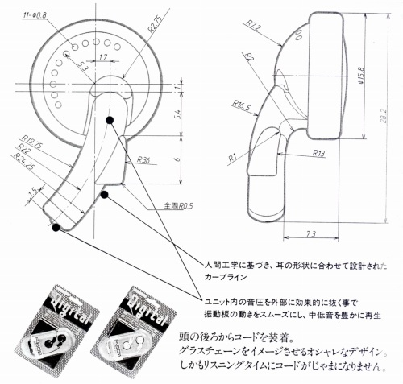

NAGAOKA（ナガオカ）
1940年に長岡時計用部品製作所として設立、商号を1950年に長岡精機宝石工業株式会社、1971年に株式会社ナガオカと改名した「アナログレコードの交換針で有名なブランド。1990年には製造・販売の部門がそれぞれ独立し、製造部門が�潟iガオカ・
�潟iガオカ精密として、また販売部門が�潟iガオカトレーディングとなっている。
オーディオ関連では現在（2021年5月時点）でも国産メーカーを中心に各社のアナログディスクプレーヤー・カートリッジの交換針の供給を続けており、アナログ全盛時には自社名で廉価なカートリッジを供給し、「ジュエルトーン」ブランドで特異なリボン型カートリッジも発売していた。
 
（左がナガオカ NN-22S 右がジュエルトーン JT-R�V ）
またアナログディスク関連をはじめとした各種のアクセサリーを手がけ、その中にはヘッドフォンも含まれる。ヘッドフォンは基本的に廉価タイプなのでオーディオ誌にはあまり登場しないが、このページで取り上げたのは1982年の「ラジオ技術」誌及び1989年の「オーディオアクセサリー」誌に掲載されていたもの。現在（2021年5月時点）でもP-600番台、900番台の製品を販売している。

（管理人宅にあったナガオカ製アクセサリー いずれも20年以上愛用している品だが、現在でも入手可能）
P-10




■価格 2,800円
■型式 ダイナミック型
■振動板
13.6�o9μ厚マイラー
■インピーダンス 32Ω
■再生周波数帯域 20-20,000Hz
■許容入力 20mW
■感度
102dB/mW
■コード 1.2m
ミニプラグ
■重量 5g（コード含まず）/15g（コード含む）
■発売 1982年頃
■販売終了
■備考 愛称は「サウンドピアス」
標準変換プラグ、スペアイヤパッド、コード・ホルダー付属
カラー広告まであった力の入った製品だった。
なお、姉妹モデルとしてカラーモデルのP-20がある。
本体のスペックはP-10と同じで、標準変換プラグが
付属しない。（価格 2,500円）
色は、シルバー、ピンク、バイオレット、イエローの4色。

P-60

■価格 1,800円
■型式 オープンダイナミックタイプ
■振動板
13.5�o
■インピーダンス 16Ω
■再生周波数帯域 20-20,000Hz
■許容入力 20mW
■感度
104dB/mW
■コード 1.2m
L型ミニプラグ
■重量 5g（コード含まず） 15ｇ（コード含む）
■発売 1989年頃
■販売終了
■備考